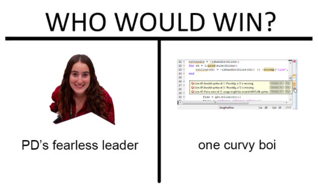
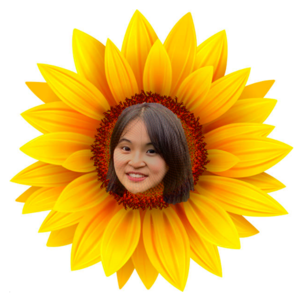

Lucas Evans - Team Lead
Biological Sciences & Psychology '22
Lucas is the Supreme Leader™ of iGEM and has declared himself Emperor of Bacteria, which he has exploited for many years. Lucas is an excellent team lead, and his leadership has bestowed iGEM with the Gilded Age, the richest iGEM has been in history. Though Lucas is built like mini Ganondorf, Lucas possesses big brain power. In fact, his body could not handle his immense intellect during the Orgo II prelim, and he almost bled out on his desk. Lucas is also a man of culture, as he is fluent in Japanese (uwu) and Roman dissing. Outside of his classes, Lucas has achieved great things. Along with his many self-awarded military medals, he has achieved Elite Smash status and boasts a YouTube channel at Lucasso Games (Lucasso).
Leo Song - Wet Lab Lead
Bio-Engineering '22
(Unofficial) Resume: Leo Song
Education:
2018 – 2022
Cornell Engineering
Major: Biological Engineering (incessantly insists everyone should be BEE in CALS), premed snek
IQ: 300
Experience:
2014 – 2018
Ithaca Native, Ithaca, NY
Leo survived Ithaca winters going uphill in the snow for most of his life when the rest of us suffer and freeze.
2018 – present
Wet Lab Lead, Cornell iGEM
Leo has led the Cornell iGEM Wet Lab team with Sophia. He brings joy to members with old pictures of tiny Leo from SciOly, and saves the day when his Co-lead complains “the software updated” (she forgot how to use it).
Skills:
•Thawing of tubes using nasal thermal conduction
•Surviving 3 prelims in one week
•Wholesome like you’ve never seen before
Honors and Awards:
Cornell iGEM Western Blot master


Sophia Windemuth - Wet Lab Lead
Biomedical Engineering + CS '21
Emma Kranich - PD Lead
Electrical and Computer Engineering '22



Swasti Shree - PNP Lead
Mechanical Engineering '22
Swasti is the P&P powerhouse of the cell. She always has everything under control, interviews set, meetings planned, and time managed. She is always there to help answer any questions and takes on any task that needs to be done. Swasti is one of the kindest people on iGEM and is also really fun to hang out with.
In her P&P work, she conducts many interviews, but… we just uncovered a short, secret, off-the-record interview with Swasti herself.
Q: Which is your favorite letter in your name?
A: I like the S, it stands for supercalifragilisticexpialidocious.
Q: Why did you choose P&P?
A: People r kool and P&P looks like a person with two eyes (PP) and a nose between (&)
Q: Have you ever lied?
A: Once, I said I was the dancing queen. All the character traits fit: dances, young and sweet, but I was 18 at the time, one year too late :(
Q: Tell us an iGEM conspiracy
A: iGEM, iPhone, iPad, see the trend… turns out Steve Jobs hired a biology PhD student to create a gemstone to put on the back of a new apple product and they misunderstood the task
For more introspective observations and advice, keep an eye out for Swasti’s new book coming out this January: How to be Swasti (a guide only available to clones)
Karen Zhan - Wiki Lead
Information Science '21


Brian Li - Business Lead
Biology and Society '22
Who’s single and ready to mingle? THIS GUYYY~ !! Born and raised in Queens, NYC 🗽and fresh out of a TOXIC ☣️ long-term relationship with the one and only, Miss Can’t Afford Therapy--aka MCAT--this man is in need of some serious TLC 🥺 But no worries, she may have taken a lot out of him, but there’s still plenty of big brain BRIAN 🧠 moves to go around!! This man is loyal, intelligent, dependable, and did I mention, over 6 feet tall??🤩 Man also loves the outdoors 🌳 so he’ll take you on the camping trip then serenade you to sleep with his ANGELIC 😇voice. Only con is that he is part man, part social butterfly🦋 so you’ll have to share 😜 So what are you waiting for?? Time to scoop him up!
Aaron Kang
Computer Science '23


Anish Navada
Computer Science '22
A Day in the Life of Anish Navada:
9:30 AM: Wake up
10:00 AM: Eat Honey Bunches of Oats
!0:20 AM: Do Algo + ML
12:00 PM: Scroll on Reddit
12:20 PM: Do Algo + ML
1:30 PM: Eat Chobani
1:45 PM: Do Algo + ML
4:30 PM: Eat a large dinner
5:30 PM: Do Algo + ML
6:30: PM: Do Algo + ML
7:00 PM: Scroll on Reddit
7:30 PM: Do Algo + ML
9:30 PM: Work on wiki
10:30 PM: Scroll on Reddit
11:00 PM: Do Algo + ML
12:30 AM: Taco Bell Run
1:30 AM: Sleep
Benedict Ho
Biological Sciences '22


Daniel Morgan
Biological Engineering '23
If you time traveled about 100 years into the past and visited Cornell, chances are that you would run into one of Daniel Morgan’s great-great grandparents. They would DEFINITELY be decked out in Cornell merch, cheering at the front lines of a hockey game. In fact, if you were ever confused about where Daniel goes to college, his personalized Cornell license plate would quickly remind you (Go BiG rEd).
When he isn’t found tackling engineering math classes, Daniel lives a true frat boy lifestyle. He is extremely social (as his Pike social chair title would indicate) and he never fails to bring chill, positive vibes to the iGEM team.
Deniz Sinar
Biological Engineering '23
She joined the team because one day she got something in her eye that was bothering her and she thought iGEM was the eye doctor. 😍 She also joined Cornell SciOly because she thought it was the skateboarding club and wanted to pull off some Scick Ollies. Gnarly!
Her favorite color is 604nm. Her spirit animal is bacteria. (yeah I know, ask her yourself) Her favorite food is pork belly, that's why we bought one.
We would usually say: you can find her at the gym getting those gainz, but you actually just won't because she spendz all her free time cooking eggz and eating the proteinz. Don't worry, she'll still flex on you whenever she gets the chance.


Gabby Lee
Applied Economics and Management '22
Needless to say she secures us the checks,
A business major somehow in biotech?
She always seems fine—is she actually a wreck?
Never says a curse word, not even what the heck!
Needless to say she secures us the checks!
A business major helping us in biotech!
Never calls it quits, even when she is a wreck
Crashing at 4AM, she only settles for the best
Thinking up solutions, never loses her grip
She’ll gulp down 10 tripleshots, never just a sip…
In the team car she’s the first to wear a belt
When all of us are hammered we can count on her for help!

Oooo oooh ooh oooh! Our Gabby is too good!
She makes our project seem like a cruise!
How can we even ever lose?
Oh you’ll be left in the dust
Unless she sticks by ya!
She has the Gabby Power!
And we could never have too much!
Oh you’ll be left in the dust
Unless she grinds for ya!
It’s the Gabby Power!
It’s the Gabby Power!
Ishmat Hoque
Biological Sciences '22


Jackson Bauer
Biomedical Engineering '22
Jackson is a multidisciplinary team member, having mastered both the art of Product Development and Wet Lab during his time in iGEM. These skills will be put to good use as Jackson plans to launch his own biotechnology company in the near future (invest now—it will for sure yield a better return than Tesla). When he’s not sampling a vast variety of culinary dishes during iGEM meetings, Jackson can be found out in the open field, dishing out paintballs to any opponent who dares to approach him.
Jackson always takes extreme precautions when entering and exiting his apartment because of a furry critter that has taken up residence under his front porch. Steve, who is of the genus Mephitis, does not pay his share of the rent, yet Jackson cannot evict him for fear of rather pungent retaliation.
Kaitlyn Beiler
Electrical or Biomedical Engineering '23


Lindsey Luo
Business '22
Lindsey is a member of the business subteam. A bubbly and friendly team player, Lindsey is a ray of sunshine that brings the team together. Before coronavirus, she organized a fantastic date night (she’s a triple threat with the karaoke microphone. She can sing! She can dance! She can act out each song like the main character in a music video!) Lindsey’s contributions go beyond her superior karaoke skills, and the main reasons our team is anxiously awaiting a coronavirus vaccine is so that we can once again attend her fun events. On the business subteam, Lindsey works to analyze the economic side of our project and market it. More importantly, her enthusiasm and charm brightens up weekly meetings and makes them much more enjoyable!
Margaret Keymakh
Biological Sciences '23
When she’s not grinding for her orgo quizzes or in the lab, Margaret can be found walking around campus talking about all the different buildings and Cornell history. She says she’s a tour guide, but no one ever sees her leading a group. Sometimes it be like that.
At first appearance, Margaret may seem short. And that is because she is short. But on her merits, she stands 6 feet tall.


Renee Shen
Computer Science '23
Ah yes, Renee Shen is an interesting person of Product Development. For all team members who don’t know her, at first her appearance seems so serious that upon her direct line of sight, you feel intimidated into immediately completing your subteam’s assignments while also wondering how great of a poker player she’d be… With glasses that provoke thoughts of a “who wore it better” war between Harry Potter and her, I think we all know who the obvious winner is. However, above all is one of her most notable aspects—her attitude toward her friends and education. After getting to know her, you’ll find that Renee is an encouraging and caring person. She is a valuable member of the team who constantly proves her dedication by the quality and speed of her work. In addition, whether it be her dragging you off to a party or her witty comeback remarks, Renee brings more laughter and fun than what we could hope for. In her spare time, Renee is busy being a mom to her plants and getting them gains at the gym.
Rocky An
Biological Sciences '22
His name’s not RICK(y)!!!
Double major engineer
He is way too smart.
He has spiky hair
Rides bikes, lifts, does mouse research
But can’t cook eggs though.
Favorite food is
Olives, coffee, kimchi… yea
All of them combined.
A man of few words
But says intelligent things
Like “Fish Tube Car Wash.”
Another good one:
“Wait, what are they called again?
oh… antibodies.”
In conclusion:
Rocky An, Rocky
An, All he wanna do is
party all night. (yea!)


Sarah Kenney
Biomedical Engineering '22
The S in Sarah stands for Smart. Or Sociable. Or Supportive. Or Sarah. As a dedicated member of the Policy and Practices team, she’s the friendly face conducting interviews with professionals in the field and the writer churning out thoughtful blog posts behind the scenes. When Sarah first applied for iGEM, the moment she mentioned her pet dogs we knew she had to become a part of the team. Her other qualifications - hard working, enthusiastic, welcoming? That’s cool and all, but just a pleasant afterthought. The decision went like so: “Baker? Yes. Dogs? Double yes.” And we’re happy to report that it was the right choice.
Truman Tse
Biological Engineering '22
It’s been an awful day. Truman would have never thought that his life was a lie filled with studio lights, actors, and scripted conversations. Now his life is surrounded by “fans” who somehow memorized every aspect of his life. But for the first time, he is truly free.
Day seven
After extensive plastic surgery, he managed to convince an Ivy League University to take him in, citing 18 years of extracurricular experience as an improv actor. Apparently that makes him one of a kind.
Day ???
Now, as a member of Cornell iGEM, he uses bacteria for his own bidding. Yes. This is real entertainment. Next up: humans.


Xihang Wang
Biological Science + Economics '23
Xihang is as masterful in the lab as he is at sleeping until times that many would consider obscene. But don’t take this as an indication of laziness; he worked diligently to produce the impeccable graphs and differential equations to model our (virtual) project in his first year with the team. He just might miss dinner if his alarm doesn’t go off. When he isn’t saucing it up in MATLAB or catching Z’s, Xihang enjoys raising chickens in his backyard and trying to convince people to join Science Olympiad. We are sure that the chickens are very proud of Xihang and his accomplishments, which include befriending a hive of bees and having the guts to not put up the bumpers in a game of bowling, in which he scored a whopping 15. Xihang is an amazing addition to our team and always brings positive energy and creative ideas to our lab meetings, Zoom sessions, and social events.